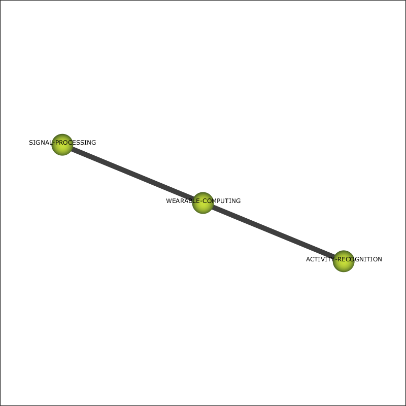

SciMAT report - subperiod 1995-2015 - cluster WEARABLE-COMPUTING
Cluster info:
- Name: WEARABLE-COMPUTING
- Density: 100
- Densisty range: 0.94
- Centrality: 0
- Centrality range: 0.06
Cluster network:

Internal links:
Internal links
| Node A |
Node B |
Weight |
| WEARABLE-COMPUTING |
ACTIVITY-RECOGNITION |
1 |
| WEARABLE-COMPUTING |
SIGNAL-PROCESSING |
1 |
| ACTIVITY-RECOGNITION |
SIGNAL-PROCESSING |
1 |
External links:
External links
| Node A |
Cluster node A |
Node B |
Cluster node B |
Weight |
Documents associated with the cluster
unionDocuments (100 first documents with highest impact)
- GHASEMZADEH, H, AMINI, N, SAEEDI, R, SARRAFZADEH, M, Power-aware Computing In Wearable Sensor Networks: An Optimal Feature Selection. Ieee Transactions On Mobile Computing 14:4 800-812 (2015). Times cited: 67
- ZAPPI, P, ROGGEN, D, FARELLA, E, TRöSTER, G, BENINI, L, Network-level Power-performance Trade-off In Wearable Activity Recognition: A Dynamic Sensor Selection Approach. Acm Transactions On Embedded Computing Systems 11:3 null-null (2012). Times cited: 37